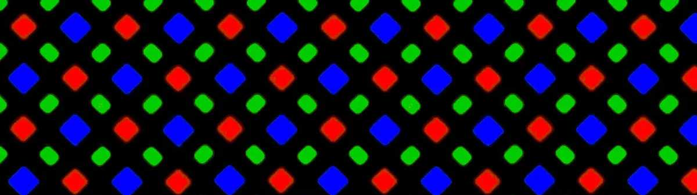

Display Energy Efficiency

Display technologies have evolved to become clearer, more colour-accurate, smoother, and more energy efficient. A contributor to better energy efficiency has been the transition from LCD displays to OLED displays.
Traditional LCD displays use a backlight to produce light, which is filtered by a layer of translucent RGB pixels. LCD displays are cheap and a very common display technology today, but they do not have the best contrast ratio and are not comparably energy efficient, as they require the backlight to be always on to display an image, regardless of the on-screen content.
OLED displays do not use a backlight, and instead rely on individual RGB pixels to produce their own light. This is much more energy efficient, as it is only the brighter portions of the display that consume energy. This also comes at the benefit of a greater contrast ratio, which is better for visual quality.
A third of all web browsing is done on mobile devices, of which most recent smartphones have OLED displays. A commonly-visited website displaying bright colours can therefore contribute to greater energy consumption for these OLED displays, causing energy to be consumed quicker and batteries to be recharged more frequently.
Creating a website with a dark colour palette with clear and readable text creates a browsing experience that is not too dissimilar from one with a bright colour palette, and can reduce energy consumption for all devices that visit it.